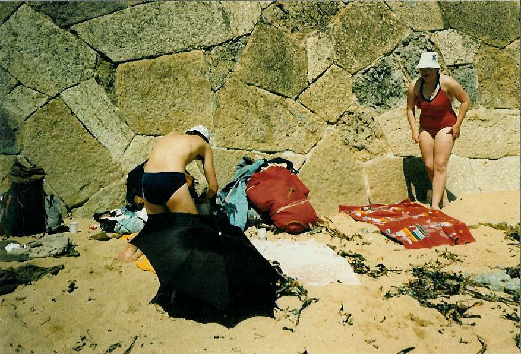

Inter Rail 1986 Day 7
Friday 29th August 1986
I woke up before the alarm so took the opportunity to set it off in Jon's ear. He was not too chuffed! I was dying to go to the loo but Eli nicked the one on our floor so I had to wait to use the one on the next floor down. Enormous queues and queue jumping ensued to try and get in a bathroom.
Paid for our room, bought some maize bread and sat on the Coimbra B/A connection train for so long we feared we had missed our connection. Luckily the connection to Porto was late in arriving. It turned out to be a little commuter train. At first we had to sit on tightly sprung wooden seats by the exit but eventually Eli and I found a proper sit down seat.

Really hammered into my Robert Ludlum enroute. We approached Lisbon along the Tagus river bank. It was very industrialised. We arrived at the S. Apolónia train station. Got the usual pestering about rooms. I was successful in ignoring them but they kept thrusting their cards into Jon's hand. One of them had a map of Lisbon on the back which showed us how to get to next train station we wanted so we decided to walk rather than pay for the underground.
It was extremely hot walking along by the docks. We found the ferry terminal where we due to leave later in the evening. Got asked umpteen times did we want to buy hashish!
We finally made it to the correct train station. Sat on our train and eat our maize bread with cheese and ham. There were lovely views of the openarmed Christ on a pedestal, a Golden Gate bridge lookalike plus what looked like a monument to people like Vasco de Gama, Magellan etc.
2 stations before Estoril we spotted a nice beach area so quickly leapt off the train. After a bit of a route march we found the sandy beach which had enormous quantities of Laminarian seaweed. There were umbrellas for hire but we decided to save our dosh and sit on our own up against the beach wall.
Sat in the sun, swam in the icily cold sea, eat ice-creams, got some sleep, read books and generally lolled about on the beach until about 6.00pm when we headed back to the train station. Had a cold hamburger in a hot bun with ketchup and mustard plus a cold beer.
Did a bit of shopping for bread etc and then caught the train back to Lisbon. Nobody was particularly fussed about seeing Central Lisbon so we caught the ferry over to the next train station. Had to get ticket stamped but the ride was free. Saw a shoal of large (1.5ft) fish flitting about next to the ferry. The trip across the Tagus took half an hour and gave opportunities for sunset over Lisbon photos.
Once we reached the other side we had a 3-4 hours wait for the train to the south so we decided to have a beer. With the second beer we started playing contract whist. Got jawing to a somewhat drunken local, obviously well known to the bar staff, who was a bottle top chucker. Had to stop playing cards under chef's orders after beer chucking followed on bottle top chucking. The local did buy us a beer. The bar closed before we'd finished our drinks so we wandered out protesting. Bought some wine and more beer and continued our drinking on the station platform. We gave a little old lady who had both legs cut off at the knees a light.
A seat only no compartment unlit train came into our platform and disappeared again. Just before our train was due, it reappeared still unlit. We sussed the fact that this was going to be our train so after a bit of sign language, we arranged for Roger and Jon to leap onto the dark, moving, unlabelled train in order to get us some seats whilst Eli and I took care of the rucksacks.
There were backpackers everywhere. We eventually had to yield our extra seat to a couple: The lad, reading Chemistry at Oxford, knew someone Eli knew. The lass had an American father/passport but sounded terribly English. Not a lot of sleep got prior to 4.00am as there was a drunken orgy going on at 1 end of the compartment plus impossibly uncomfortable seats. I finally got some sleep when Roger came out from under the seats and I got to sleep full length on the floor.
{kind=link}
{kind=link}
{kind=link}
{kind=link}